| 1. 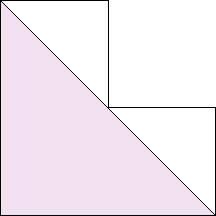 | 2. 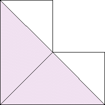 | 3. 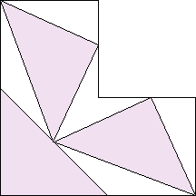 | ||
| s = 1/2 Trivial. | s = 1/√2 = .707+ Trivial. | s = (1+√7) / 4 = .911+ Found by Erich Friedman in July @2011. |
4.
| 5.-6. | 7. 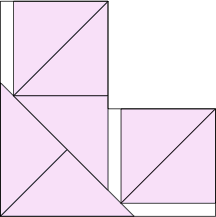 | ||
| s = (√6 + √2) / 4 = .965+ Found by Maurizio Morandi in July 2012. | s = 1 Trivial. | s = (2 + √2) / 3 = 1.138+ Found by David W. Cantrell in July 2012. |
| 8. 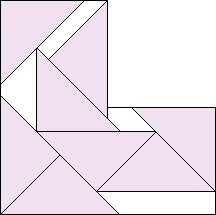 | 9. 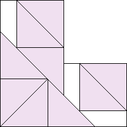 | 10. 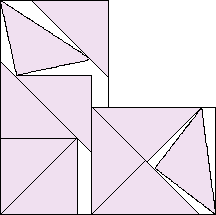 | ||
| s = (1 + 2√2) / 3 = 1.276+ Found by Maurizio Morandi in July 2012. | s = 4/3 = 1.333+ Found by Maurizio Morandi in July 2012. | s = 1.400+ Found by Maurizio Morandi in July 2012. |
| 11.-12. 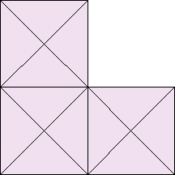 | 13. 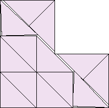 | 14. 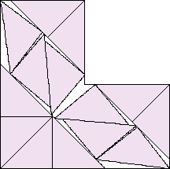 | ||
| s = √2 = 1.414+ Trivial. | s = 1.499+ Found by Maurizio Morandi in July 2012. | s = 1.607+ Found by Maurizio Morandi in August 2012. |
| 15. 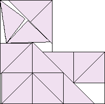 | 16. 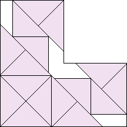 | 17. 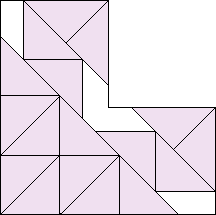 | ||
| s = 1.680+ Found by Maurizio Morandi in August 2012. | s = 1/3 + √2 = 1.747+ Found by Maurizio Morandi in August 2012. | s = (4 + √2) / 3 = 1.804+ Found by Maurizio Morandi in August 2012. |